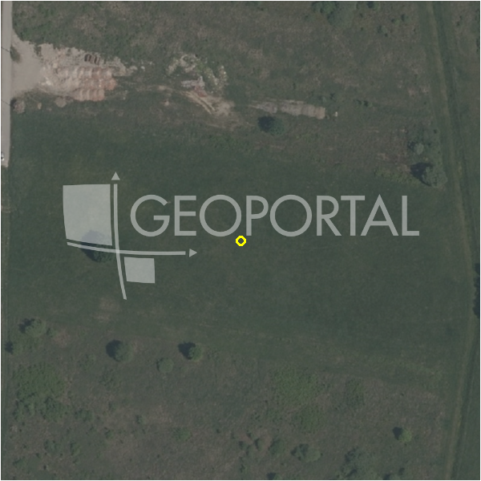

#7007 · Ulica Ivana Granđe, Šašinovec, Sesvete, 3.596,00 m2, 199.998,00 EUR
Sesvete, Sesvete, Grad Zagreb · zemljiste · njuskalo · status active · oglas ↗
Ocjena
- Score
- 13 rule 13 · LLM – · 13.09.2026.
- RLV
- -482.000 € (-134 €/m²) · ratio -2,41
- Ukupna investicija
- 2,58 M€
- GBP
- 1.117 m²
- Feedback
- –
- CRM
- –
Oglas
- Cijena
- 199.998 € (56 €/m²)
- Površina
- 3.596 m²
- Prodavatelj
- agencija · Opereta nekretnine
- Prvi put
- 11.09.2026. · zadnje 11.09.2026. · 2 d na tržištu
Povijest cijene
| Datum | Cijena |
|---|---|
| 11.09.2026. | 199.998 € |
Flagovi
zone_uncertainty zona nije pregledana (reviewed: false) (−5)zona_provjeriti zona iz geokodiranja — provjeriti (−5)
parcelacija fazni projekt / parcelacija
djelomicno_gradivo djelomicno_gradivo
llm_pending LLM ekstrakcija/ocjena nedostupna
Komponente score-a
| rlv | {'gbp': 1116.558, 'kis': 1.5, 'nkp': 915.57756, 'noi': None, 'rlv': -481696.71407999995, 'ratio': -2.4085076554765545, 'value': None, 'phases': 2, 'profile': 'zagreb_visestambeno', 'gdv_neto': 2270632.3488, 'cost_soft': 165808.86299999998, 'gdv_bruto': 2838290.4359999998, 'kis_known': True, 'total_inv': 2583008.793, 'cost_build': 1842320.7, 'cost_other': 362881.35, 'cost_sales': 85148.71307999999, 'demolition': False, 'gbp_source': 'kis', 'rlv_per_m2': -133.95347999999998, 'parcel_area': 3596.0, 'parcelation': True, 'roi_on_cost': -0.1539000402775633, 'profit_at_ask': -397525.15728000016, 'cost_demolition': 0.0, 'total_inv_phase': 1397503.3364999997, 'parcel_area_effective': 744.3720000000001, 'sale_price_per_m2_nkp': 3100.0} |
| hard | [] |
| info | ['parcelacija', 'djelomicno_gradivo', 'llm_pending'] |
| rubric | {'permits': {'max': 5.0, 'detail': {'permit': 'none'}, 'points': 0.0}, 'location': {'max': 15.0, 'detail': {'source': 'benchmark:seed:Sesvete', 'sale_price_per_m2_nkp': 3100.0}, 'points': 0.0}, 'physical': {'max': 4.0, 'detail': {'slope_pct': 1.4, 'slope_points': 2.0}, 'points': 2.0}, 'liquidity': {'max': 3.0, 'detail': {'n_cuts': 0, 'points_cut': 0.0, 'points_days': 0.016666666666666666, 'seller_type': 'agencija', 'points_fresh': 0.5, 'price_cut_pct': None, 'days_on_market': 2, 'points_private': 0}, 'points': 0.52}, 'rlv_ratio': {'max': 25.0, 'detail': {'rlv': -481697, 'ratio': -2.409, 'asking_price': 199998.0}, 'points': 0.0}, 'ticket_fit': {'max': 10.0, 'detail': {'asking_price': 199998.0}, 'points': 5.33}, 'zone_quality': {'max': 8.0, 'detail': {'no_upu': True, 'source': 'gis', 'zone_class': 'mjesovito_pretezito_stambeno', 'zone_ideal': True, 'gp_uredjeni': True}, 'points': 6.0}, 'profit_potential': {'max': 20.0, 'detail': {'roi_on_cost': -0.154, 'profit_at_ask': -397525}, 'points': 0.0}, 'price_vs_benchmark': {'max': 10.0, 'detail': {'source': 'auto:Sesvete', 'deviation': 0.293, 'ask_eur_m2': 56, 'benchmark_eur_m2': 78.72}, 'points': 8.93}} |
| weights | {'llm': 0.4, 'rule': 0.6, 'model': 0.0} |
| penalties | {'zona_provjeriti': 5, 'zone_uncertainty': 5} |
| raw_score | 22,8 |
| rlv_notes | ['parcelacija: > 3000 m² → fazni projekt, −10 % površine, +5 % soft', 'gradivo 23 % čestice (744 m²) — ostatak izvan gradive zone', 'gbp_claim 4000 > 1.15 × kis×površina (1117) → ignoriran', 'fazni projekt: 2 faze; investicija prve faze 1,397,503 €'] |
| flag_notes | {'phases': 2, 'max_gbp': 1117, 'total_inv': 2583009, 'zone_code': 'M1-1', 'zone_note': 'provjeriti (geokodirano, zona = dominantna u 150 m)', 'zone_class': 'mjesovito_pretezito_stambeno', 'zone_source': 'gis', 'zone_reviewed': False, 'commercial_pct': 0.0, 'total_inv_phase': 1397503, 'commercial_source': 'zone_rule'} |
| caps_applied | [] |
GIS
- Čestica
- –
- Zona
- M1-1 (mjesovito_pretezito_stambeno) · NIJE pregledana · provjeriti (geokodirano, zona = dominantna u 150 m)
- kig / kis / katnost
- 0,40 / 1,50 / Po+P+3+Pk
- GP / UPU
- uredjeni · UPU ne
- Pristup / nagib
- unknown · 1,4 % (max 3,1 %)
- More
- –
- Zaštite
- Natura ne · zaštićeno ne · kulturno dobro ne
- Zgrade na čestici
- 0 %
- Match
- –
Karta
Ortofoto (DOF)

RLV kalkulacija — pretpostavke
| gbp | {'value': 1116.558, 'source': 'kis'} |
| kis | {'value': 1.5, 'source': 'gis'} |
| soft_pct | {'value': 0.09, 'source': 'profil+parcelacija'} |
| nkp_ratio | {'value': 0.82, 'source': 'profil'} |
| cost_other | {'value': 362881.35, 'source': 'profil: doprinosi+uređenje po m² GBP, financiranje+rezerva % gradnje'} |
| zone_share | {'value': 0.23, 'source': 'gis'} |
| parcel_area | {'value': 3596.0, 'source': 'oglas'} |
| asking_price | {'value': 199998.0, 'source': 'oglas'} |
| margin_on_cost | {'value': 0.15, 'source': 'profil'} |
| build_cost_per_m2_gbp | {'value': 1650.0, 'source': 'profil'} |
| sale_price_per_m2_nkp | {'value': 3100.0, 'source': 'benchmark:seed:Sesvete'} |
| transfer_tax_and_acquisition | {'value': 0.06, 'source': 'profil'} |
Ekstrakcija iz oglasa
| gbp_claim | 4000.0 |
| zone_claim | S |
| slope_mention | ravno |
Benchmarks mikrolokacije
| Vrsta | Vrijednost | n | Od | Izvor |
|---|---|---|---|---|
| land_ask_eur_m2 | 79 | 125 | 11.09.2026. | auto |
| newbuild_sale_eur_m2_nkp | 3.100 | – | 10.09.2026. | seed |
Opis oglasa
Ulica Ivana Granđe, Šašinovec, Sesvete, 3.596,00 m2, 199.998,00 EUR PRODAJA, ZEMLJIŠTE, STAMBENA NAMJENA, RAVNA PARCELA, SESVETE, SOBLINEC, ŠAŠINOVEC, 3569m2. Prodaje se prekrasna parcela ravne površine u ulici Ivane Granđe - Šašinovec. Površina parcele je 3569m2 - širina sa ceste 40m - najveća duljina 120m. Maksimalna izgradivost parceliziranjem parcele do oko 4000m2 brp. Visina gradnje do 4 nadzemne etaže. Cijela parcela u stambenoj zoni. Izvrsna prilika. USLUGA KREDITNOG POSREDOVANJA: Opereta ekspert pruža besplatnu uslugu kreditnog posredovanja, uspoređujući ponude više banaka na jednom mjestu. Naš tim objašnjava sve opcije i vodi vas kroz cijeli proces – od konzultacija do isplate kredita, kako biste donijeli informiranu financijsku odluku i uštedjeli vrijeme.